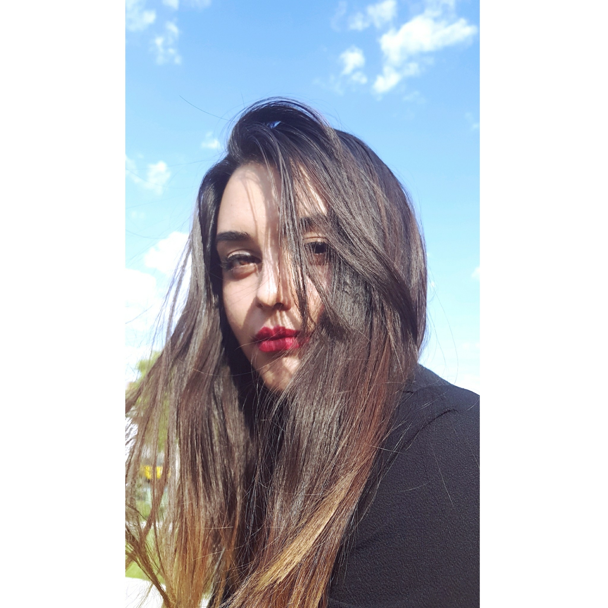

Claudia Andrea Rojas Márquez
Studies:
Technological Baccalaureate: Electronics and Communications (2013-2016)
Computer Engineering: Studying 7th semester
Skills:
Electronic circuit design: 60%
Programming in C, C ++, Python language: 70%
Software:
Matlab
Office
Professional interests:
Be able to improve and implement my knowledge
Experience:
Diagnostic Technician at EDG 1 year (2018)
Developer at ExinnoTech 2 years (2018-2020)
Projects:
2016 - "Dispositivo para personas epilépticas"
Languages
Spanish: Natal
Englis: 95%
References:
Saul De Alba Varela - Friend
Ariadna Deniz Casillas Brust - Friend